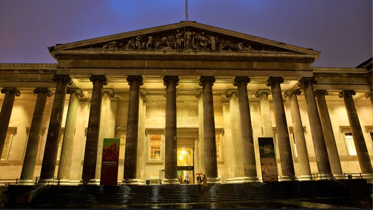

MUSEU BRITÂNICO | LONDRES, INGLATERRA
O Museu Britânico (em inglês: British Museum) localiza-se em Londres e foi fundado em 7 de junho de 1753. A sua coleção permanente inclui peças como a Pedra de Roseta e os frisos do Partenon de Atenas, conhecidos como a coleção de mármores de Elgin, trazidos ao museu por Lord Elgin. Em 2012 foi o terceiro museu mais visitado do mundo, com 5 575 946 visitas.
História
O Museu Britânico é um marco fundamental no estabelecimento do método museológico, além de representar diversos aspectos característicos tanto da sociedade inglesa vitoriana quanto do pensamento político e científico do século XIX. Aberto em 15 de janeiro de 1759, após a aprovação do rei Jorge II em 1753, foi o primeiro grande museu público, gratuito, secular e nacional em todo o mundo. Não foi, entretanto, o primeiro museu moderno. O Museu Ashmolean, de Oxford (1679), tem o mérito de ter sido a primeira grande instituição museológica destinada especificamente a exposições públicas, organizadas para propósitos educacionais.
Ao ser fundado, o Museu Britânico reuniu três coleções: a Cottonian Library, coleção de manuscritos medievais de Sir Robert Cotton (1570-1631), os manuscritos da coleção do Conde de Oxford, Robert Harley (1661-1724) e a enorme coleção de Sir Hans Sloane (1660-1753), composta de antiguidades clássicas e medievais, moedas, manuscritos, livros, quadros e gravuras, além das peças que formariam o núcleo central do Departamento de História Natural do Museu Britânico. A enorme heterogeneidade dessas coleções sem dúvida foi a característica mais marcante dessa fase. O museu não estava tão distante dos gabinetes de curiosidades que marcaram a Europa no século XVIII: era pouco mais do que um enorme amontoado de objetos sem nenhuma classificação ordenada, apresentados menos para propósitos educacionais do que para "exaltar o espírito e enaltecer o progresso da humanidade".
Da antiguidade temos a origem de uma característica do museu moderno, em especial do museu Britânico: a combinação de exposições (entretenimento educacional para o público geral) e de uma biblioteca (pesquisa para um público erudito e acadêmico). A partir da consolidação desse modelo por Anthony Panizzi (1797-1879) na Biblioteca Britânica, este é um atributo hoje praticamente obrigatório para qualquer museu.
Sala de leitura
A Sala de Leitura do Museu Britânico, situada na Queen Elizabeth II Great Court, costumava ser a principal sala de leitura do Museu Britânico. Em 1997, esta função mudou-se para o novo edifício da Biblioteca Britânica em St Pancras, Londres, mas a Sala de Leitura permanece em sua forma original no Museu Britânico.
A Sala de Leitura foi oficialmente inaugurada em 2 de maio de 1857 com um "café da manhã" (que inclui champanhe e sorvete) dispostos nas mesas do catálogo. Uma exibição pública foi realizada entre 8 e 16 de maio, que atraiu mais de 62 mil visitantes. Os ingressos para ele incluíram um plano da biblioteca. A Sala de Leitura foi usada por um grande número de figuras notáveis, incluindo Sun Yat-sen, Karl Marx, Oscar Wilde, Friedrich Hayek, Bram Stoker, Mahatma Gandhi, Rudyard Kipling, George Orwell, George Bernard Shaw, Mark Twain, Vladimir Lenin (usando o nome Jacob Richter[3]), Virginia Woolf, Arthur Rimbaud, Mohammad Ali Jinnah,[4] H. G. Wells[5] e Sir Arthur Conan Doyle.
Disputa com a Grecia
Desde 1980 o governo grego vem realizando esforços diplomáticos para reaver peças do Pártenon que foram roubadas por ingleses e que compõem o acervo do Museu Britânico. A disputa acirra-se em torno dos mármores de Elgin, esperando a devolução por parte do Museu Britânico, o governo grego construiu um grande museu no sopé da acrópole para receber as peças